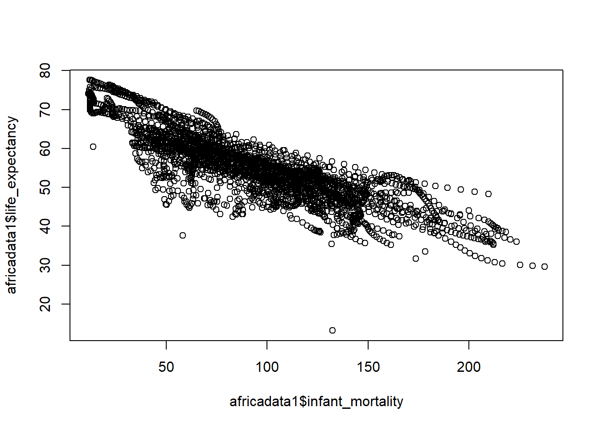
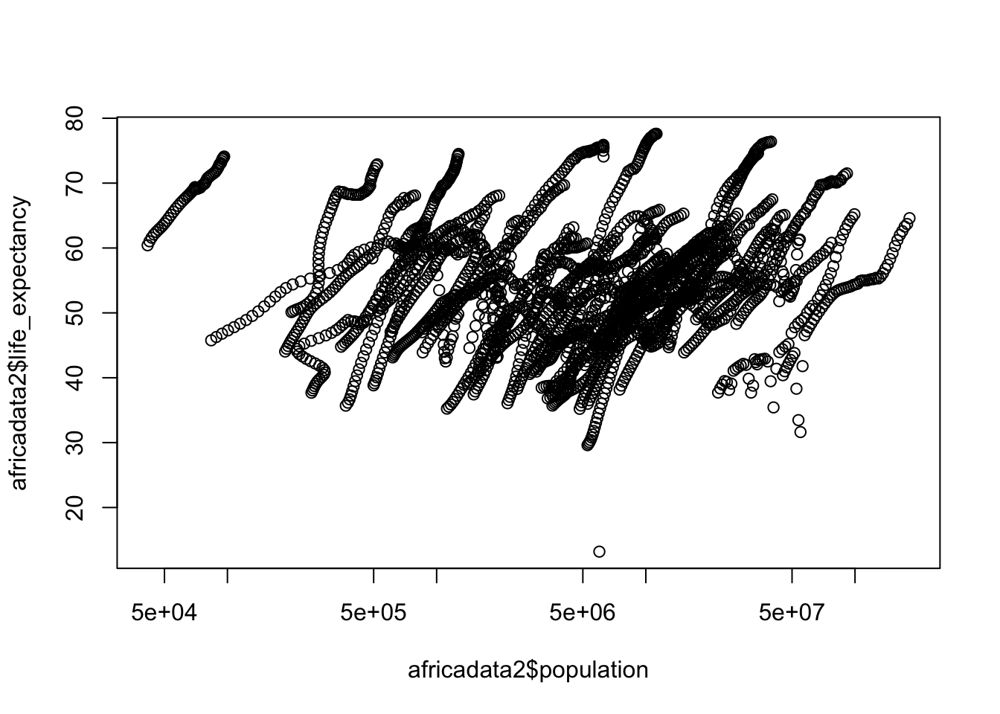
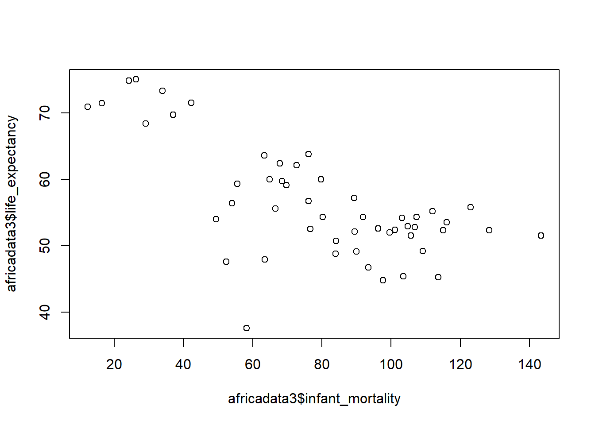
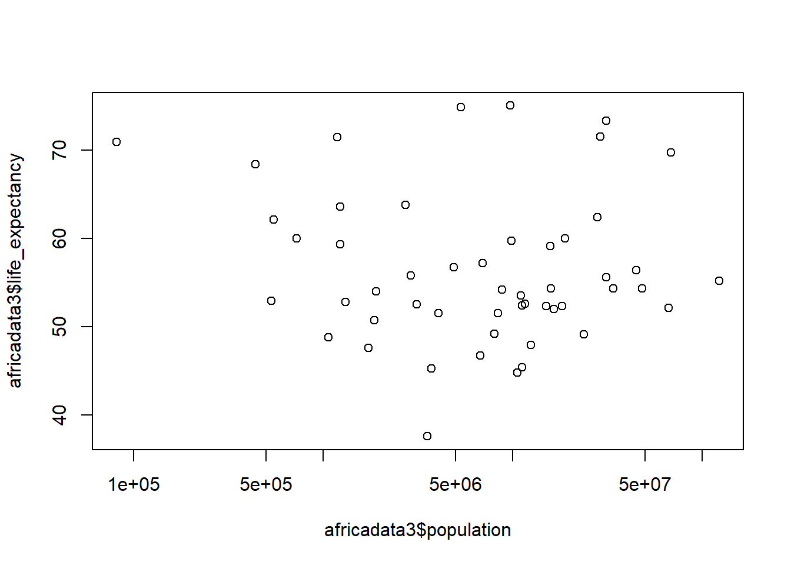
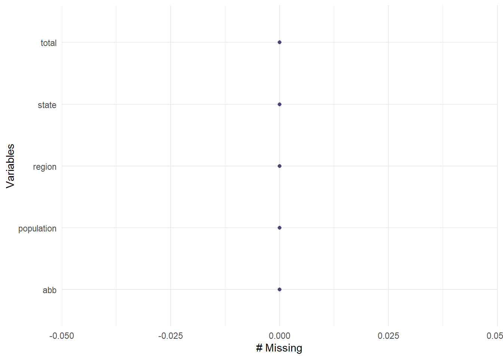
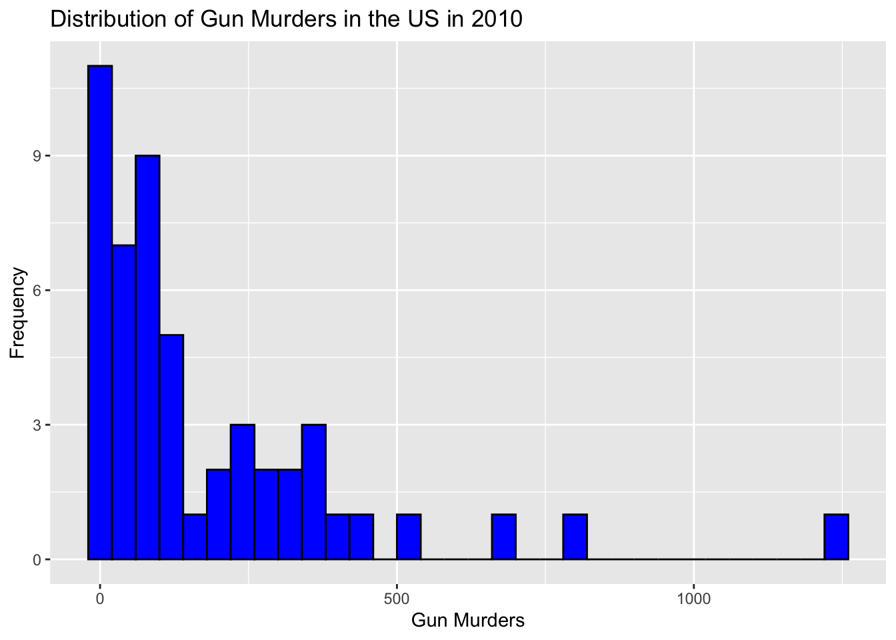
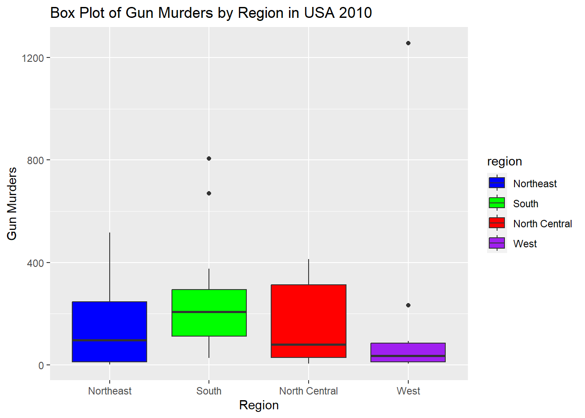

── Attaching core tidyverse packages ──────────────────────── tidyverse 2.0.0 ──
✔ dplyr 1.1.4 ✔ readr 2.1.4
✔ forcats 1.0.0 ✔ stringr 1.5.1
✔ ggplot2 3.4.4 ✔ tibble 3.2.1
✔ lubridate 1.9.3 ✔ tidyr 1.3.0
✔ purrr 1.0.2
── Conflicts ────────────────────────────────────────── tidyverse_conflicts() ──
✖ dplyr::filter() masks stats::filter()
✖ dplyr::lag() masks stats::lag()
ℹ Use the conflicted package (<http://conflicted.r-lib.org/>) to force all conflicts to become errors
#Look at help file for "gapminder"help(gapminder)#Get an overview of data structurestr(gapminder)
'data.frame': 10545 obs. of 9 variables:
$ country : Factor w/ 185 levels "Albania","Algeria",..: 1 2 3 4 5 6 7 8 9 10 ...
$ year : int 1960 1960 1960 1960 1960 1960 1960 1960 1960 1960 ...
$ infant_mortality: num 115.4 148.2 208 NA 59.9 ...
$ life_expectancy : num 62.9 47.5 36 63 65.4 ...
$ fertility : num 6.19 7.65 7.32 4.43 3.11 4.55 4.82 3.45 2.7 5.57 ...
$ population : num 1636054 11124892 5270844 54681 20619075 ...
$ gdp : num NA 1.38e+10 NA NA 1.08e+11 ...
$ continent : Factor w/ 5 levels "Africa","Americas",..: 4 1 1 2 2 3 2 5 4 3 ...
$ region : Factor w/ 22 levels "Australia and New Zealand",..: 19 11 10 2 15 21 2 1 22 21 ...
#Get a summary of datasummary(gapminder)
country year infant_mortality life_expectancy
Albania : 57 Min. :1960 Min. : 1.50 Min. :13.20
Algeria : 57 1st Qu.:1974 1st Qu.: 16.00 1st Qu.:57.50
Angola : 57 Median :1988 Median : 41.50 Median :67.54
Antigua and Barbuda: 57 Mean :1988 Mean : 55.31 Mean :64.81
Argentina : 57 3rd Qu.:2002 3rd Qu.: 85.10 3rd Qu.:73.00
Armenia : 57 Max. :2016 Max. :276.90 Max. :83.90
(Other) :10203 NA's :1453
fertility population gdp continent
Min. :0.840 Min. :3.124e+04 Min. :4.040e+07 Africa :2907
1st Qu.:2.200 1st Qu.:1.333e+06 1st Qu.:1.846e+09 Americas:2052
Median :3.750 Median :5.009e+06 Median :7.794e+09 Asia :2679
Mean :4.084 Mean :2.701e+07 Mean :1.480e+11 Europe :2223
3rd Qu.:6.000 3rd Qu.:1.523e+07 3rd Qu.:5.540e+10 Oceania : 684
Max. :9.220 Max. :1.376e+09 Max. :1.174e+13
NA's :187 NA's :185 NA's :2972
region
Western Asia :1026
Eastern Africa : 912
Western Africa : 912
Caribbean : 741
South America : 684
Southern Europe: 684
(Other) :5586
#Determine the type of object "gapminder" isclass(gapminder)
[1] "data.frame"
Part 2 - Processing Data
#Assign only the African countries in "gapminder" to a new objectafricadata <-subset(gapminder, continent =="Africa")#Get an overview of data structure and data summary for "africadata"str(africadata)
'data.frame': 2907 obs. of 9 variables:
$ country : Factor w/ 185 levels "Albania","Algeria",..: 2 3 18 22 26 27 29 31 32 33 ...
$ year : int 1960 1960 1960 1960 1960 1960 1960 1960 1960 1960 ...
$ infant_mortality: num 148 208 187 116 161 ...
$ life_expectancy : num 47.5 36 38.3 50.3 35.2 ...
$ fertility : num 7.65 7.32 6.28 6.62 6.29 6.95 5.65 6.89 5.84 6.25 ...
$ population : num 11124892 5270844 2431620 524029 4829291 ...
$ gdp : num 1.38e+10 NA 6.22e+08 1.24e+08 5.97e+08 ...
$ continent : Factor w/ 5 levels "Africa","Americas",..: 1 1 1 1 1 1 1 1 1 1 ...
$ region : Factor w/ 22 levels "Australia and New Zealand",..: 11 10 20 17 20 5 10 20 10 10 ...
summary(africadata)
country year infant_mortality life_expectancy
Algeria : 57 Min. :1960 Min. : 11.40 Min. :13.20
Angola : 57 1st Qu.:1974 1st Qu.: 62.20 1st Qu.:48.23
Benin : 57 Median :1988 Median : 93.40 Median :53.98
Botswana : 57 Mean :1988 Mean : 95.12 Mean :54.38
Burkina Faso: 57 3rd Qu.:2002 3rd Qu.:124.70 3rd Qu.:60.10
Burundi : 57 Max. :2016 Max. :237.40 Max. :77.60
(Other) :2565 NA's :226
fertility population gdp continent
Min. :1.500 Min. : 41538 Min. :4.659e+07 Africa :2907
1st Qu.:5.160 1st Qu.: 1605232 1st Qu.:8.373e+08 Americas: 0
Median :6.160 Median : 5570982 Median :2.448e+09 Asia : 0
Mean :5.851 Mean : 12235961 Mean :9.346e+09 Europe : 0
3rd Qu.:6.860 3rd Qu.: 13888152 3rd Qu.:6.552e+09 Oceania : 0
Max. :8.450 Max. :182201962 Max. :1.935e+11
NA's :51 NA's :51 NA's :637
region
Eastern Africa :912
Western Africa :912
Middle Africa :456
Northern Africa :342
Southern Africa :285
Australia and New Zealand: 0
(Other) : 0
#Create a new object that only contains infant mortality and life expectancyafricadata1 <- africadata %>%select("infant_mortality", "life_expectancy")#Create a new object that only contains population and life expectancyafricadata2 <- africadata %>%select("population", "life_expectancy")#Get an overview of data structure and data summary for "africadata1" and "africadata2"str(africadata1)
'data.frame': 2907 obs. of 2 variables:
$ infant_mortality: num 148 208 187 116 161 ...
$ life_expectancy : num 47.5 36 38.3 50.3 35.2 ...
summary(africadata1)
infant_mortality life_expectancy
Min. : 11.40 Min. :13.20
1st Qu.: 62.20 1st Qu.:48.23
Median : 93.40 Median :53.98
Mean : 95.12 Mean :54.38
3rd Qu.:124.70 3rd Qu.:60.10
Max. :237.40 Max. :77.60
NA's :226
str(africadata2)
'data.frame': 2907 obs. of 2 variables:
$ population : num 11124892 5270844 2431620 524029 4829291 ...
$ life_expectancy: num 47.5 36 38.3 50.3 35.2 ...
summary(africadata2)
population life_expectancy
Min. : 41538 Min. :13.20
1st Qu.: 1605232 1st Qu.:48.23
Median : 5570982 Median :53.98
Mean : 12235961 Mean :54.38
3rd Qu.: 13888152 3rd Qu.:60.10
Max. :182201962 Max. :77.60
NA's :51
Part 3 - Plotting
#Plot life expectancy as a function of infant mortalityplot(africadata1$infant_mortality, africadata1$life_expectancy)

There is a negative correlation between infant mortality and life expectancy.
#Plot life expectancy as a function of population sizeplot(africadata2$population, africadata2$life_expectancy, log ="x")

There is a positive correlation between population size and life expectancy, however, there are streaks of data that seem to go together. This is because there are different years for individual countries, and that over time these countries increase in population size and also life expectancy.
Part 4 - More Data Processing
#Figure out which years have missing data for infant mortalitymissing_infant_mortality <- africadata[is.na(africadata$infant_mortality),]#Create a new object by extracting only the data for the year 2000 from "africadata"africadata3 <-subset(africadata, year =="2000")#Get an overview of data structure and data summary for "africadata3"str(africadata3)
'data.frame': 51 obs. of 9 variables:
$ country : Factor w/ 185 levels "Albania","Algeria",..: 2 3 18 22 26 27 29 31 32 33 ...
$ year : int 2000 2000 2000 2000 2000 2000 2000 2000 2000 2000 ...
$ infant_mortality: num 33.9 128.3 89.3 52.4 96.2 ...
$ life_expectancy : num 73.3 52.3 57.2 47.6 52.6 46.7 54.3 68.4 45.3 51.5 ...
$ fertility : num 2.51 6.84 5.98 3.41 6.59 7.06 5.62 3.7 5.45 7.35 ...
$ population : num 31183658 15058638 6949366 1736579 11607944 ...
$ gdp : num 5.48e+10 9.13e+09 2.25e+09 5.63e+09 2.61e+09 ...
$ continent : Factor w/ 5 levels "Africa","Americas",..: 1 1 1 1 1 1 1 1 1 1 ...
$ region : Factor w/ 22 levels "Australia and New Zealand",..: 11 10 20 17 20 5 10 20 10 10 ...
summary(africadata3)
country year infant_mortality life_expectancy
Algeria : 1 Min. :2000 Min. : 12.30 Min. :37.60
Angola : 1 1st Qu.:2000 1st Qu.: 60.80 1st Qu.:51.75
Benin : 1 Median :2000 Median : 80.30 Median :54.30
Botswana : 1 Mean :2000 Mean : 78.93 Mean :56.36
Burkina Faso: 1 3rd Qu.:2000 3rd Qu.:103.30 3rd Qu.:60.00
Burundi : 1 Max. :2000 Max. :143.30 Max. :75.00
(Other) :45
fertility population gdp continent
Min. :1.990 Min. : 81154 Min. :2.019e+08 Africa :51
1st Qu.:4.150 1st Qu.: 2304687 1st Qu.:1.274e+09 Americas: 0
Median :5.550 Median : 8799165 Median :3.238e+09 Asia : 0
Mean :5.156 Mean : 15659800 Mean :1.155e+10 Europe : 0
3rd Qu.:5.960 3rd Qu.: 17391242 3rd Qu.:8.654e+09 Oceania : 0
Max. :7.730 Max. :122876723 Max. :1.329e+11
region
Eastern Africa :16
Western Africa :16
Middle Africa : 8
Northern Africa : 6
Southern Africa : 5
Australia and New Zealand: 0
(Other) : 0
Part 5 - More Plotting
#Plot life expectancy as a function of infant mortality for the year 2000plot(africadata3$infant_mortality, africadata3$life_expectancy)

There is a negative correlation between infant mortality and life expectancy for the year 2000.
#Plot life expectancy as a function of population size for the year 2000plot(africadata3$population, africadata3$life_expectancy, log ="x")

There is no noticeable correlation between population size and life expectancy for the year 2000.
Part 6 - Simple Model Fits
#Fit life expectancy as the outcome and infant mortality as the predictorfit1 <-lm(life_expectancy ~ infant_mortality, data = africadata3)summary(fit1)
Call:
lm(formula = life_expectancy ~ infant_mortality, data = africadata3)
Residuals:
Min 1Q Median 3Q Max
-22.6651 -3.7087 0.9914 4.0408 8.6817
Coefficients:
Estimate Std. Error t value Pr(>|t|)
(Intercept) 71.29331 2.42611 29.386 < 2e-16 ***
infant_mortality -0.18916 0.02869 -6.594 2.83e-08 ***
---
Signif. codes: 0 '***' 0.001 '**' 0.01 '*' 0.05 '.' 0.1 ' ' 1
Residual standard error: 6.221 on 49 degrees of freedom
Multiple R-squared: 0.4701, Adjusted R-squared: 0.4593
F-statistic: 43.48 on 1 and 49 DF, p-value: 2.826e-08
For the year 2000, infant mortality is significantly associated with life expectancy (p-value < 0.001), however, the low R-squared value indicates that only 47% of the variation in life expectancy is explained by the model with only infant mortality as a predictor.
#Fit life expectancy as the outcome and population size as the predictorfit2 <-lm(life_expectancy ~ population, data = africadata3)summary(fit2)
Call:
lm(formula = life_expectancy ~ population, data = africadata3)
Residuals:
Min 1Q Median 3Q Max
-18.429 -4.602 -2.568 3.800 18.802
Coefficients:
Estimate Std. Error t value Pr(>|t|)
(Intercept) 5.593e+01 1.468e+00 38.097 <2e-16 ***
population 2.756e-08 5.459e-08 0.505 0.616
---
Signif. codes: 0 '***' 0.001 '**' 0.01 '*' 0.05 '.' 0.1 ' ' 1
Residual standard error: 8.524 on 49 degrees of freedom
Multiple R-squared: 0.005176, Adjusted R-squared: -0.01513
F-statistic: 0.2549 on 1 and 49 DF, p-value: 0.6159
For the year 2000, population size is not significantly associated with life expectancy (p-value = 0.62), and the very low R-squared value indicates that only 0.52% of the variation in life expectancy is explained by the model with only population size as a predictor.
This section contributed by Patrick Kaggwa
A. Processing the Data
Using “murders” data frame from dslabs.
# Explore the murders dataframe#Looking at the structure of US gun murders by state in 2010str(murders)
#I will use head() function to take a quick look at my datahead(murders)
state abb region population total
1 Alabama AL South 4779736 135
2 Alaska AK West 710231 19
3 Arizona AZ West 6392017 232
4 Arkansas AR South 2915918 93
5 California CA West 37253956 1257
6 Colorado CO West 5029196 65
summary(murders)
state abb region population
Length:51 Length:51 Northeast : 9 Min. : 563626
Class :character Class :character South :17 1st Qu.: 1696962
Mode :character Mode :character North Central:12 Median : 4339367
West :13 Mean : 6075769
3rd Qu.: 6636084
Max. :37253956
total
Min. : 2.0
1st Qu.: 24.5
Median : 97.0
Mean : 184.4
3rd Qu.: 268.0
Max. :1257.0
# Now I will look through my data frame to see if have missing values using naniar from naniar packagenaniar::gg_miss_var(murders)

I see that we don’t have any missing data.
# Creating a new variable called 'gunmurders' from total variable from murders data framemurders <- murders %>%mutate(gunmurders = total)# checking for the new created new variablecolnames(murders)
#Using a histogram to visualize the gunmurders using the ggplot function from the ggplot2 packageggplot(murders, aes(x = gunmurders)) +geom_histogram(binwidth =40, fill ="blue", color ="black") +labs(title ="Distribution of Gun Murders in the US in 2010", x ="Gun Murders", y ="Frequency")

Looking at the distribution, its skewed on the left
# Now I will create a table with a state with the highest and lowest gun murders# Here I will use filter, select functions from the dylyr package# Finding the state with the maximum gun murdersmax_state <- murders %>%filter(gunmurders ==max(gunmurders)) %>%select(state)# Finding the state with the minimum gun murdersmin_state <- murders %>%filter(gunmurders ==min(gunmurders)) %>%select(state)# Create a summary tablesummary_table <-data.frame(State =c("Maximum Gun Murders", "Minimum Gun Murders"),State_Name =c(max_state$state, min_state$state),Gun_Murders =c(max(murders$gunmurders), min(murders$gunmurders)))# Print the summary tableprint(summary_table)
State State_Name Gun_Murders
1 Maximum Gun Murders California 1257
2 Minimum Gun Murders Vermont 2
According to the table California and Vermont have the maximum and minimum gun murders respectively in 2010.
#Then I will look at the gun murders by region #I will visualise using a box plot show the Range of each regionggplot(murders, aes(x = region, y = gunmurders, fill = region)) +geom_boxplot() +labs(title ="Box Plot of Gun Murders by Region in USA 2010",x ="Region", y ="Gun Murders") +scale_fill_manual(values =c("Northeast"="blue", "South"="green", "North Central"="red", "West"="purple"))

C.Simple Model Fits
#Now I will do some simple regression of with each of the valiable # Fitting a linear regression modelmodel1 <-lm(gunmurders ~ population, data = murders)summary(model1)
Call:
lm(formula = gunmurders ~ population, data = murders)
Residuals:
Min 1Q Median 3Q Max
-112.889 -25.656 -3.687 25.505 217.780
Coefficients:
Estimate Std. Error t value Pr(>|t|)
(Intercept) -1.713e+01 1.198e+01 -1.43 0.159
population 3.316e-05 1.315e-06 25.23 <2e-16 ***
---
Signif. codes: 0 '***' 0.001 '**' 0.01 '*' 0.05 '.' 0.1 ' ' 1
Residual standard error: 63.77 on 49 degrees of freedom
Multiple R-squared: 0.9285, Adjusted R-squared: 0.9271
F-statistic: 636.5 on 1 and 49 DF, p-value: < 2.2e-16
Overall, it seems like the population variable is a statistically significant predictor of gun murders in the linear regression model with a p-value < 0.01
# Fitting a linear regression modelmodel2 <-lm(gunmurders ~ region, data = murders)summary(model2)
Call:
lm(formula = gunmurders ~ region, data = murders)
Residuals:
Min 1Q Median 3Q Max
-219.76 -135.38 -82.00 64.51 1110.00
Coefficients:
Estimate Std. Error t value Pr(>|t|)
(Intercept) 163.22 79.70 2.048 0.0462 *
regionSouth 83.54 98.57 0.848 0.4010
regionNorth Central -10.89 105.44 -0.103 0.9182
regionWest -16.22 103.68 -0.156 0.8763
---
Signif. codes: 0 '***' 0.001 '**' 0.01 '*' 0.05 '.' 0.1 ' ' 1
Residual standard error: 239.1 on 47 degrees of freedom
Multiple R-squared: 0.03611, Adjusted R-squared: -0.02541
F-statistic: 0.587 on 3 and 47 DF, p-value: 0.6265
This implies that the differences in gun murders between different regions (South, North Central, West) are not statistically significant based on the current model2.
# Fitting a linear multiple regression model between region and total population model3 <-lm(gunmurders ~ region + population, data = murders)summary(model3)
Call:
lm(formula = gunmurders ~ region + population, data = murders)
Residuals:
Min 1Q Median 3Q Max
-93.124 -42.386 -1.239 24.105 178.883
Coefficients:
Estimate Std. Error t value Pr(>|t|)
(Intercept) -3.881e+01 2.114e+01 -1.836 0.0728 .
regionSouth 6.191e+01 2.444e+01 2.534 0.0148 *
regionNorth Central 7.818e+00 2.614e+01 0.299 0.7662
regionWest 3.897e+00 2.570e+01 0.152 0.8801
population 3.287e-05 1.225e-06 26.823 <2e-16 ***
---
Signif. codes: 0 '***' 0.001 '**' 0.01 '*' 0.05 '.' 0.1 ' ' 1
Residual standard error: 59.25 on 46 degrees of freedom
Multiple R-squared: 0.9421, Adjusted R-squared: 0.937
F-statistic: 187 on 4 and 46 DF, p-value: < 2.2e-16
Region South’ is statistically significant with p value <0.01 The population variable remains highly significant, suggesting that population is a strong predictor of gun murders in this model.